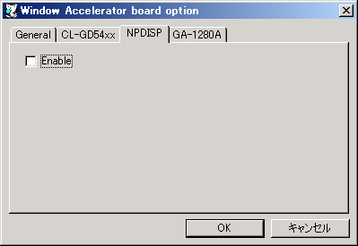

NPDISPはNeko Project 21/Wで使用できる専用のウィンドウアクセラレータです。 主にWindows3.1をターゲットとしており、OS標準ドライバに代わる高解像度表示ドライバとして使用できます。 描画のほとんどをホストOSに投げる仕組みになっており、それなりに高速な描画が期待できます。
NPDISPはWindows 3.1での使用に最適化されています。 Windows 9xでも使用できますが、DirectDrawが使えない、16bitカラーでOpenGLを使うとフリーズする等々問題が多く、推奨しません。
NPDISPのデバイスドライバは、Neko Project 21/Wと同じ場所で配布されています。
チェックを入れるとNeko Project 21/W 専用ウィンドウアクセラレータが有効になります。この設定はリセット後に反映されます。